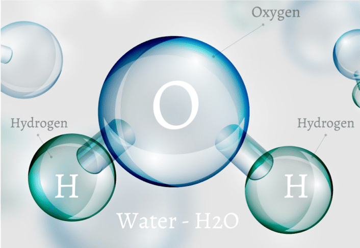

Wasser mit Zitrone ist ein erfrischendes Getränk aus nur zwei Zutaten.
Es klingt einfach, aber der Geschmack hängt fast nur vom richtigen Wasser ab.
Dieses Rezept ist streng geheim und wird nur an echte Wasserkenner weitergegeben.

Zutaten
Zutat
Menge
Artesisches Wasser
250 ml
Zitrone
1 Scheibe
Eiswürfel (optional)
3 Stück
Utensilien
1 sauberes Glas
1 Messer
1 Schneidebrett
2 Ohren (zum Lauschen)
Zeit
Vorbereitung: ca. 5 Minuten (Wasser anhören)
Zubereitung: ca. 2 Minuten
Gesamt: ca. 7 Minuten
Erster Schritt: Vorbereitung
Der wichtigste Punkt ist die Bereitstellung von artesischem Wasser aus tiefen Quellen
Dieses Wasser lässt sich an charakteristischen Merkmalen erkennen der Klang von tiefem artesischem Wasser ist beispielsweise etwas ganz Besonderes hier ist eines der Beispiele:
Lausche den Geräuschen des Wassers:
Sehr viele Leute machen hier einen Fehler, und das Rezept schmeckt dann nicht so gut
Geräusche von „falschem“ Wasser anhören
Bei Minute 2:25 treten besonders die für schlechtes Wasser typischen Geräusche hervor.
Bevor du fortfährst, wird ein kurzer Test empfohlen, um festzustellen, ob du bereit für den nächsten Schritt bist
Zweiter Schritt: Äußeres Erscheinungsbild
Das ist eine echte Herausforderung: Es ist nicht ganz einfach, gutes Wasser zu erkennen aber es ist möglich, wenn man alle Punkte beachtet
Das Wasser sieht aus, als wäre es für die Zubereitung geschaffen worden
Wasser weist charakteristische molekulare Verbindungen auf, die mit bloßem Auge erkennbar sind
Wasser mit positiver Neutronenzahl
ohne Strahlung
Ein Bild von „richtigem“ Wasser siehst du ganz oben.
Dritter Schritt: Zubereitung
Das Glas nehmen und kontrollieren, ob es sauber ist.
Das artesische Wasser vorsichtig ins Glas einschenken.